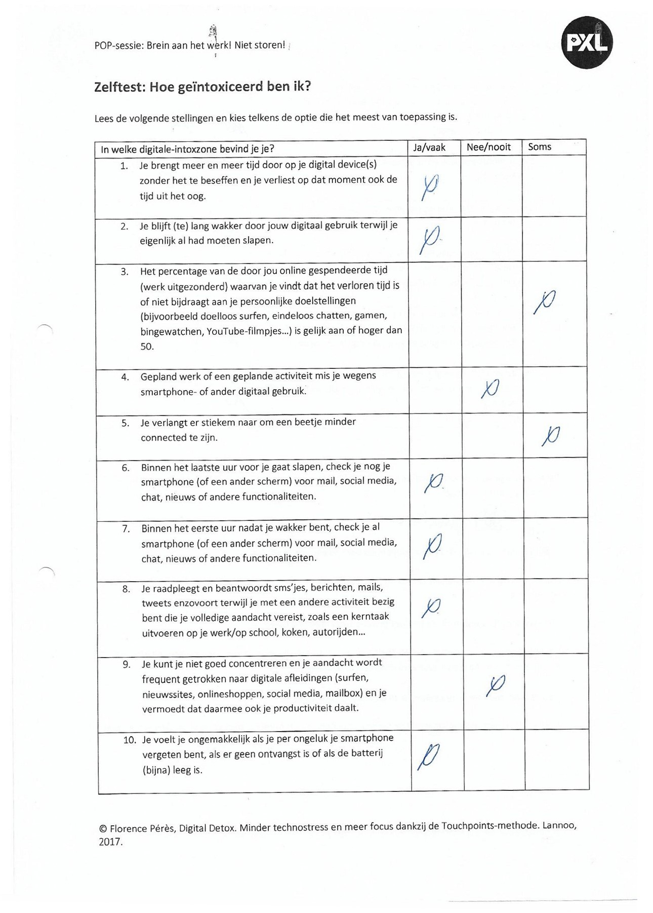
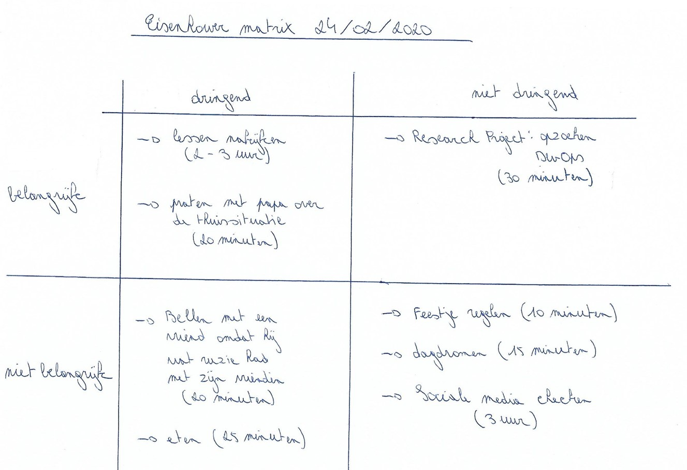

De POP-sessie "Brein aan het werk! Niet storen!" heeft me geleerd minder connectief te zijn op sociale media.
Ik kreeg de kans om eens na te denken hoeveel tijd ik spendeer aan sociale media. Hierbij kwam ik tot de conclusie
dat ik iedere dag veel tijd spendeer aan mijn smartphone.
Wanneer we met vrienden afspreken hebben we nu ook een duidelijke afspraak; de smartphone leggen we aan de kant.
Doordat we deze afspraak maakten wordt er veel meer gepraat dan voordien.
Aan de hand van de afbeeldingen op deze webpagina kan je aflezen dat ik vaak kruisjes plaatste in de kolom "ja/vaak".
Dit resulteerde in het feit dat ik een totaalscore haalde van 22 punten wat concreet betekende dat ik niet meer zonder mijn smartphone kon.
Na de POP-sessie begon ik na te denken en ben blij dat ik mijn smartphone minder gebruik dan voordien.

Gedurende de POP-sessie "Brein aan het werk! Niet storen!" kreeg ik ook de kans om eens na te denken wat ik de dag voordien zoal gedaan had.
Ik stelde hierbij een Eisenhower matrix op. Aan de hand van zo'n matrix kan je nagaan met welke belangrijke en dringende zaken
je bezig bent geweest. Vervolgens krijg je ook een beeld over de niet belangrijke en niet dringende zaken.
Ook hier kwam ik tot de conclusie dat ik heel wat tijd spendeerde aan sociale media.